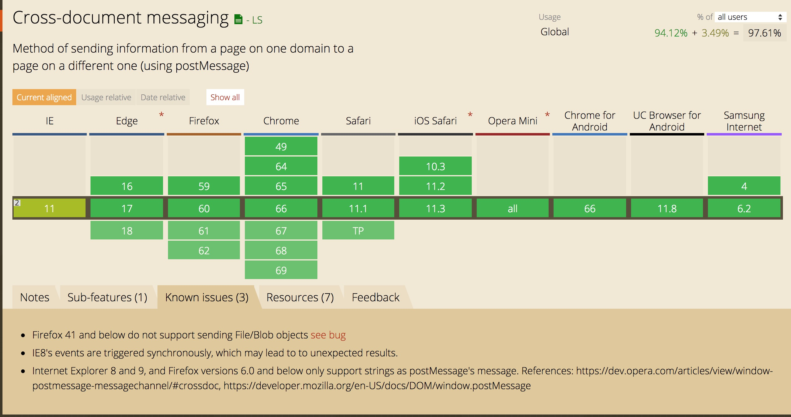
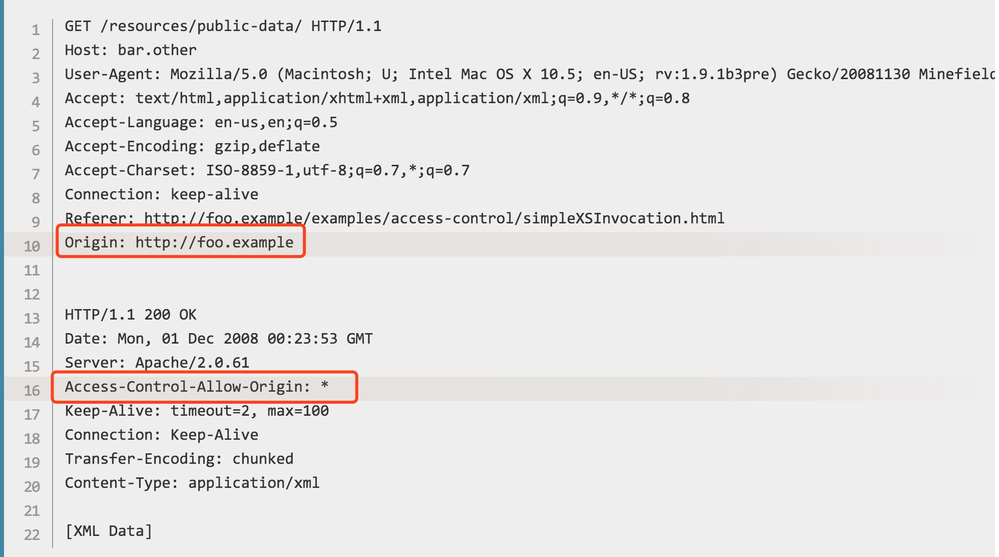

同源政策
同源政策是
浏览器出于安全考虑，提出的一种重要安全机制，通过限制了不同源之间的交互，以隔离潜在的恶意文件对网站带来的安全问题。
那什么是同源，也就是跨域是什么？
一个源的定义：如果两个页面协议，端口和域名都相同，则两个页面属于同一源
下表列举了同源比较的示例：
| URL | Outcome | Reason |
|---|---|---|
| http://store.company.com/dir2/other.html | success | |
| http://store.company.com/dir/inner/another.html | success | |
| https://store.company.com/secure.html | failure | 不同协议 |
| http://store.company.com:81/dir/etc.html | failure | 不同端口 |
| http://news.company.com/dir/other.html | failure | 不同主机 |
同源政策限制了不同源的交互，其中这里的交互主要分为三类：
- 允许跨域写操作：像链接，重定向自己表单提交
- 允许跨域资源嵌入：像
<script>,<link rel="stylesheet">,<img>,<video>，<iframe>等 - 不允许跨域读操作，常见的有
- XMLHttpRequest 和 Fetch API
- 获取DOM
- 获取浏览器本地存储数据: localStorage,IndexedDB等
注意：cookies使用不同的源方式定义：一个页面允许为本域和任何父域设置cookie，只要父域不是公共后缀。cookie不区分协议或端口，不管使用哪个协议或端口号，浏览器都允许给定的域以及其任何子域名放问cookie。
跨域解决方案
页面之间的跨域通信
一、document.main + iframe
页面可以通过dcoument.main来更改自己的源，但是有限制，即只能通过document.domain设置为当前域或当前域的超级域，可以利用这个特性，解决主域相同，不同子域框架间的交互问题
原理：将父窗口和子窗口都设置document.domain为基础主域，就实现了同域
实现
1 | // www.domain.com/a.html |
此方案只适用于主域相同，子域不同的跨域应用场景中
二、location.hash + iframe
假设www.aaa.com/a.html要和www.bbb.com/b.html传递信息
- a.html首先创建一个隐藏的iframe，src指向
www.bbb.com/b.html - b.html响应请求后，通过修改a.html的hash值来传递数据
- a.html监听onhashchange事件，判断location.hash的值有没有变化，一旦变化则获取hash值
两个不同域的页面不允许修改parent.location.hash的值，所以要借助iframe
- 由于location.hash直接暴露在url上，并且在浏览器里产生历史记录，数据安全性不高且用户体验差
- 由于url大小的限制，支持传递的数据量不大
- 有些浏览器不支持onhashchange事件，需要轮询来获知url的变化
三、Window.name + iframe
window对象的name属性，该属性有以下特征：
- 在一个窗口的生命周期内，窗口载入的所有的页面都是共享
一个window.name - name的值在不同的页面（甚至不同域名）加载后
持久存在，不会因新页面的载入而进行重置。 - 支持非常长的name值（2MB）
比如我们在任意一个页面执行下面代码
1 | window.name = "My window's name"; |
进入example.cn页面后我们打印window.name，就能看到在上个页面设的值了。可见，在同一个标签里跳转网页，window.name是不会改变的
原理：A页a.html获取B页面b.html的window.name值，由于跨域，利用iframe，在第一次加载B页面的时候，切换到一个与A页面同域的代理中间空白页proxy.html，在第二次加载proxy页就能读取B页面设置的window.name的值了
实现
1 | var proxy = function(url, callback) { |
该方法与document.domain相比，放宽了域名后缀要相同的限制，可以从任意页面获取string类型的数据
四、Window.postMessage
Window.postMessage是HTML5引入的一个新API:跨文档通信，用来解决跨窗口通信问题。
使用方法：
Window.postMessage(message, targetOrigin, [transfer])
message是发送到其他window的数据，其值可以是对象也可以是字符串(IE8,9)targetOrigin用来指定哪些窗口能接收到消息事件，其值可以是字符串"*"（不推荐），表示不限制域名，向所有窗口发送；也可以是一个URI，即”协议 + 域名 + 端口”,只有当目标窗口协议、域名和端口三者完全匹配，消息才能被发送。
两个窗口之间通过注册message事件来监听消息，message事件的的事件对象event，提供三个属性：
- event.data: 发送的数据
- event.origin: 消息发送方的origin，由”协议 + 域名 + 端口”拼接而成
- event.source：发送消息的窗口对象的引用
兼容性

注意到IE8+, chrome，Firefox等主流浏览器都支持这个功能。但是在IE8和9以及Firefox 6.0和更低版本仅支持字符串作为postMessage的消息。
实现
假设A页面域名是http://www.aaa.com，B窗口域名是http://www.bbb.com，B页面向A窗口发送消息
1 | /* |
1 | /* |
如果不考虑低版本IE，此方法，是目前解决iframe之间交互的比较好的方案
AJAX请求不同源的跨域
一、JSONP
同源策略允许跨域资源嵌入，利用这个特性，通过创建一个<script>元素，向服务器请求JSON数据，这种做法不受同源策略限制，服务器收到请求后，将数据放在一个指定的名字的回调函数里传回来，从而实现跨域通信
1 | // 客户端 |
此方法虽然简单，但只支持GET请求
二、WebSocket
WebSocket是一种通信协议，使用ws://（非加密）和wss://（加密）作为协议前缀。该协议不受同源政策限制，只要服务器支持，就可以通过它进行跨源通信。
三、CORS
CORS是一个W3C标准，全称是”跨域资源共享”（Cross-origin resource sharing）
跨域资源共享（ CORS ）机制允许 Web 应用服务器进行跨域访问控制，从而使跨域数据传输得以安全进行。浏览器支持在 API 容器中（例如 XMLHttpRequest 或 Fetch ）使用 CORS，以降低跨域 HTTP 请求所带来的风险。
CORS需要浏览器和服务器同时支持。目前，所有浏览器都支持该功能，IE浏览器不能低于IE10。
浏览器将CORS请求分成：简单请求、预检请求和附带凭证信息的请求
简单请求
满足下面两个条件的浏览器就视为简单请求：
- 只使用 GET, HEAD 或者 POST 请求方法。如果使用 POST 向服务器端传送数据，则数据类型(Content-Type)只能是 application/x-www-form-urlencoded, multipart/form-data 或 text/plain中的一种。
- 不会使用自定义请求头（类似于 X-Modified 这种）。
比如，假如站点 http://foo.example 的网页应用想要访问 http://bar.other 的资源。http://foo.example 的网页中可能包含类似于下面的 JavaScript 代码：
1 | var invocation = new XMLHttpRequest(); |

如上，通过使用 Origin 和 Access-Control-Allow-Origin 就可以完成最简单的跨站请求。不过服务器需要把 Access-Control-Allow-Origin 设置为 * 或者包含由 Origin 指明的站点(协议 + 域名 + 端口)。
头信息的Origin字段是浏览器自动添加的
预检请求
当满足以下条件的则为预检请求
- 请求以 GET, HEAD 或者 POST 以外的方法发起请求。或者，使用 POST，但请求数据为 application/x-www-form-urlencoded, multipart/form-data 或者 text/plain 以外的数据类型。比如说，用 POST 发送数据类型为 application/xml 或者 text/xml 的 XML 数据的请求。
- 使用自定义请求头（比如添加诸如 X-PINGOTHER）
例如：
1 | var invocation = new XMLHttpRequest(); |
客户端发送请求头主要信息：
1 | Access-Control-Request-Method: POST |
服务器成功响应返回部分信息：
1 | Access-Control-Allow-Origin: http://foo.example //表明服务器允许http://foo.example的请求 |
附带凭证信息的请求
CORS请求默认不发送Cookie和HTTP认证信息。如果要把Cookie发到服务器，一方面要服务器同意，指定Access-Control-Allow-Credentials字段。另一方面，开发者必须在AJAX请求中打开withCredentials属性。
代码如下：
1 | // http://foo.example站点的脚本向http://bar.other站点发送一个GET请求，并设置了一个Cookies值。脚本代码如下： |
假设服务端返回成功响应部分消息如下：
1 | Access-Control-Allow-Origin: http://foo.example |
需要注意的是，对于附带身份凭证的请求，服务器不能设置 Access-Control-Allow-Origin 的值为
“*”，必须指定明确的、与请求网页一致的域名。在上面例子中，
Access-Control-Allow-Origin 的值应该设置为http://foo.example，请求才能被成功执行
CORS支持所有类型的HTTP请求，是跨域HTTP请求的根本解决方案。
误区
动态请求就会有跨域问题
跨域是浏览器行为，不存在与java/node/python等环境。
跨域就是请求发不出去
跨域请求能发出去，服务端能收到请求并正常返回结果，只是结果被浏览器拦截了，最好的例子就是CSRF跨站攻击原理，但是有一个特例，有些浏览器不允许从 HTTPS 的域跨域访问 HTTP，比如Chrome 和 Firefox，这些浏览器在请求还未发出的时候就会拦截请求
在平时的项目开发中，我们并没有处理与后端接口请求的跨域，却没出息跨域问题，是因为我们用node搭建了http服务，通过node来转发uri，node服务和后端服务之间的不存在跨域的。
再次重申，跨域是浏览器的行为。
总结
- 对于不同源的iframe之间通信，推荐window.postMessage方案
- 使用XMLHttpRequest或Fetch发起跨站HTTP请求，CORS是根本解决方案
- 有些浏览器不允许从HTTPS的域跨域访问HTTP，页面被block，比如Chrome和Firefox，这些浏览器在请求还未发出的时候就会拦截请求，解决方案：推动所有业务接入方迁移到https
- document.domain只限于在主域相同，不同子域之间通信的应用场景，若主域支持http协议，而子域仅支持https，这种情况下该方法失效，使用window.postMessage代替
Refs
- https://developer.mozilla.org/en-US/docs/Web/HTTP/CORS
- https://developer.mozilla.org/en-US/docs/Web/API/Window/postMessage
- https://github.com/wengjq/Blog/issues/2
- http://www.ruanyifeng.com/blog/2016/04/cors.html